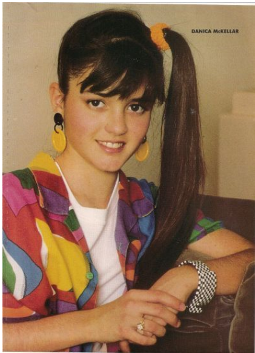
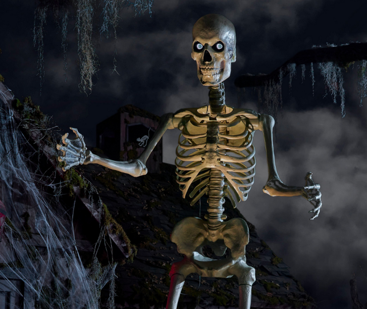

Monsters and Ghosts
Full Fate stat blocks for everyone else in the house. Stress boxes and consequence slots below are live — check them off and type in consequences during play; nothing is saved after you close the page.

Ashley West
- Plagued by Visions & Voices
- Frustrating Little Sister
Physical Description: A field vest with a dozen pockets, worn sneakers, a smear of dirt on one knee.
Items She Has: A well-thumbed field guide to local birds and mammals, her name written inside the cover in careful handwriting: Ashley West.
What She Knows: Plagued by visions and voices even before tonight. She's home when the ritual goes wrong, is frightened by it, hides for about an hour, and then goes looking for Tiffany. Unlike the PCs, Ashley isn't affected by the amnesia — and she can see and speak with Temperance (a West-family ghost) clearly before the party ever finds her. She's a good tool for feeding the party information they can't get any other way, but she isn't a fully fleshed-out NPC beyond that — improvise her freely.
Skills
| Great (+4) | Lore | ||
|---|---|---|---|
| Good (+3) | Investigate | ||
| Fair (+2) | Stealth | Athletics | |
| Average (+1) | Crafts | Empathy | Provoke |
Stunts
Animal Affinity: player picks one animal type (cats, rodents, horses, etc), fixed for the whole game. At the start of any scene where that animal could reasonably appear, make a Lore check at Good (+3); on a success, one is present.
Berserk Rage: when she suffers a physical consequence, she can invoke it for free on her next attack. Multiple consequences = multiple free invokes.
Physical Stress
Mental Stress
Consequences
She isn't in the ballroom for the ritual, so she isn't caught in the initial blast and doesn't start the night with the party. In practice, this means her actual arrival is on your clock, not the players' — in one run of this, she didn't show up until session 2.
Pick a hiding room for her ahead of time: somewhere outside the ballroom, close enough to the action that finding her later makes sense, but not so close she'd have been swept up in the ritual herself.
If the player who'd be running Ashley is sitting at the table from the start, tell them plainly they'll need to be patient for a few minutes, and position Ashley closer to the ballroom so it isn't long before she's found. You don't want that player to get bored, but you do want to drum up some suspense — use your best judgement. There are ways to feed Ashley's player information through a side chat channel that will make them feel important later, to balance out a later start. Time her entrance for when the players have figured out they're in danger, and keep her a little jumpy. The player characters should sense someone else is in the house with them before they learn it's Tiffany's little sister.
Brandon Ross
- Mr. Popular
- Casual Blackmailer
- Short Fuse
- "We found him like that, officer"
In the 4-player game, Brandon is an NPC rather than a played character — he dies in the same ritual that leaves everyone else with temporary amnesia (see the Ballroom hint where the party finds his body). While he's alive, though, he's still working his usual angle: charming, manipulative, quick to sniff out an opening on everyone around him.
Corey — holds the hit-and-run over him. Since Kelly isn't used in this roster, her secret transferred to Corey: he was driving, hit a pedestrian, and hid the body. Brandon knows, and uses it to get Corey to do his homework, cover for him, whatever he needs.
Joel — knows about the underground boxing ring Joel joined to pay off gambling debts. Same leverage as in the other rosters where Joel exists as a PC.
Jennifer — knows she's secretly dating two people at once. In this roster, that's Joel and Corey, neither aware of the other. Brandon isn't one of the two partners himself — he just knows, and holds it over her.
If the party searches his body: a small notebook in his jacket pocket, written in his own shorthand rather than plainly — "C.T. — the dent thing, keep quiet, $ if needed." "J.L. — Friday nights, the ring, still owes." "J— — two @ once, neither knows. leverage." Don't hand players the decode outright; let them work out from context that C.T. is Corey Taylor (the hit-and-run), J.L. is Joel Lopez (his boxing-ring debt), and J— is Jennifer (dating two people, neither aware of the other).
Brandon is a played character in every other roster — see the Roster page.
Francis II
- Killed his father
- Impulsive; haunted by his own choice
High Concept: Dutiful Heir
Skills
| Great (+4) | Stealth | ||
|---|---|---|---|
| Good (+3) | Provoke | ||
| Fair (+2) | Lore | Will | |
| Average (+1) | Empathy | Deceive | Crafts |
Stunts
Ghostly: cannot physically attack, cannot physically be attacked.
Physical Stress
Immune to physical attacks
Mental Stress
Consequences
Francis II discovered his father's pattern of killing people under his power and, recognizing that Elizabeth's tragedy was part of the same sin, killed him for it — then spent the rest of his afterlife haunted by his actions, conflicted that the right answer somehow involved patricide.
His confession (Yellow Room, 1636): a letter in his own hand, admitting he drowned his father in the estate's pond. He calls it unbearable to confess, but explains he'd learned of his father's cruelty toward Elizabeth from the old man's own journal and couldn't let it stand — while also deciding not to tell Elizabeth herself, since she'd found some happiness and he didn't want to shatter it. To the world, Francis West Sr. remains a colonial hero; he intends to keep it that way.
His research, in his own journal fragments, scattered through the house: after Elizabeth's tragedy but before he killed his father (1633–1635), he went looking for the rest of his father's victims. He found three: Patience, a groundskeeper's daughter, paid off the books until the payments simply stopped (Library, 1633); Elias, a debtor his father claimed to have sent west to work off a debt, who was never heard from again (Southeast Servant's Quarters, 1634); and Caleb, a ward of the estate with no family to ask after him, the angriest and most personal of the three entries (Southwest Servant's Quarters, 1635). Each entry keeps an object — Patience's carved bird, Elias's pocket-watch chain, Caleb's tin soldier — that he later gathered into a shrine at his father's tomb (Mausoleum), disguised as a grieving son's devotion but meant as an indictment.
At the Grounds, near the pond, Francis II's ghost can actually be found and interacted with directly — he can be helpful to the party if approached there.
Nathaniel
- Vampire Technophobe
- I'm too old for this shit
Skills
| Great (+4) | Lore | ||
|---|---|---|---|
| Good (+3) | Fight | Athletics | |
| Fair (+2) | Empathy | Will | Deceive |
| Average (+1) | Shoot | Crafts | Stealth |
Stunts
Spider Walk: treat any surface, any angle, as no harder than a vertical climb with good handholds.
Inhuman Speed: +4 Investigate for initiative; +1 Athletics (+2 sprinting); move 1 zone free without the -1 supplemental penalty; Stealth difficulty from movement reduced by 2.
Inhuman Toughness (Catch: Holy Water): Armor:1 vs physical stress; two extra physical stress boxes.
Physical Stress (+1 armor; fangs are a weapon at +2)
Mental Stress
Consequences
He has his own story about the ghosts of long-dead family who linger on the property. He hasn't spent his whole life here, though — after growing up on the estate, he spent a few hundred years out in the world, and only returned once things got too technologically advanced for him. He used to live in the house itself, but moved out to the stable-turned-garage once Tiffany's family showed up and displaced him.
White Lady
- Vengeful Ghost
- Murdered her son
Skills
| Great (+4) | Lore | ||
|---|---|---|---|
| Good (+3) | Will | ||
| Fair (+2) | Empathy | Provoke | |
| Average (+1) | Fight | Athletics |
Stunts
Ghostly: cannot physically attack, cannot physically be attacked.
Otherworldly Rage: once per hour, if she and the youngest PC present are in a room with water, she can manifest physically and try to drown them. While manifested she can take stress/damage. On her next turn, she flees.
A Mother's Scream: once per scene, she can let out a scream that attacks every PC in the room at once, mentally, using a single Provoke roll against each of their Will defenses.
Physical Stress (immune while non-corporeal; see Otherworldly Rage)
Mental Stress
Consequences
Born 1615, died 1690.
Her appearance as a ghost can vary — pick whichever serves the scene: murky and indistinct, barely a shape in the dark; a close match to her family portrait, young and recognizable; or an old woman, closer to how she'd have actually looked when she died.
She is Elizabeth West.
Her full story: she fell in love with a local working man against her father's wishes and married him anyway. When he died in a mill accident, she came home widowed, her small son in tow, and her father told her coldly that no respectable man would take her with a laborer's child. In her grief, she drowned her infant son in the pond behind the manse. Her father then had her married off to Richard Cary within the month.
She's trapped here, unable to leave the grounds even in death — not unlike the mist that's currently keeping the party in the same place.
She wants revenge on her father.
If asked how to leave, or to help her (any of these three appease her — End Games 1–3): she'll have no reason to stay if she can avenge herself on her father. His remains are in the mausoleum — retrieve and burn them, without ceremony, in the servant's kitchen downstairs. Expect physical resistance along the way. Revealing her brother's act (Francis II killing their father) can also appease her, as can promising to reveal the truth about Francis I — though convincing the wider world that a celebrated colonial hero was actually a murderer is no small task. This should cost the party real, sustained social effort (multiple rolls, pushback from people who don't want to believe it), not a single easy roll — the exact shape of that is up to you.

Skelly I — Mob
- Doesn't remember
- Attacks the living for their insolence
High Concept: Risen West-Family Dead / Servant
Skills (base, before mob bonus)
| Mob A | Mob B | ||
|---|---|---|---|
| Fair (+2) | Fight | +2 | +2 |
| Average (+1) | Athletics | +1 | +1 |
Stunts
Grows stronger, faster, and quicker to summon as the night goes on.
Mob A — Size
Mob B — Size
Generic risen West-family dead/servants — not tied to Francis I's specific victims (Patience, Elias, and Caleb have their own journal entries and shrine elsewhere). Two independent mobs, each sized 1–6. Set a mob's size, then check off boxes as it takes hits — each box is one member down. A mob rolls its skill plus a bonus of +1 per 2 members (rounded down, shown live as "Mob skill") — a mob of 6 fights at Fight +4, not +2. Stress capacity is 2 boxes per member.
Skelly II — Mob
- Doesn't remember
- Attacks the living for their insolence
High Concept: Risen West-Family Dead (later, stronger wave)
Skills (base, before mob bonus)
| Mob A | Mob B | ||
|---|---|---|---|
| Good (+3) | Fight | +3 | +3 |
| Fair (+2) | Athletics | +2 | +2 |
Stunts
Same notes as Skelly I — use this stat block for skeletons raised later in the night, when the White Lady is stronger. Stress capacity is 3 boxes per member, reflecting the stronger wave.
Same usage as Skelly I: two independent mobs, sized 1–6 each. Set a mob's size, then check off boxes as it takes hits — each box is one member down. The "Mob skill" line updates automatically to show the size bonus (+1 per 2 members, rounded down) added to the base Fight/Athletics.
Mob A — Size
Mob B — Size
Grave Golem
- Attacks the living for their insolence
Skills
| Good (+3) | Fight | ||
|---|---|---|---|
| Fair (+2) | Athletics | Provoke | |
| Average (+1) | Will |
Stunts
Knockback: on a success with style on a Fight attack, reduce the hit by 1 to move your opponent one zone (no impeding situation aspects).
Physical Stress
Mental Stress
—
A hulking construct of grave-dirt and old bone that guards the mausoleum — something built out of grief and left to rot into rage, standing watch over what's inside whether anyone asked it to or not. It doesn't need more backstory than that; it's fine as a monster for a monster's sake. (Francis II's own story is told elsewhere — his journal entries scattered through the house, and the shrine he built over his father's tomb, right here in this room.)
Mist
- Magical Barrier
Skills
| Good (+3) | Athletics |
|---|
Stunts
Reflection: successful hits on the barrier of 2+ stress throw the attacker backward, with a chance (difficulty 2) to inflict damage/stress.
Physical Stress (1 through 10 — see original scale)
The mist's appearance shifts over the course of the night: dense and strong at first, in the immediate aftermath of the séance gone wrong, but by the time dawn approaches, it should look thin and pale enough that it'll plausibly burn off in the morning sunlight. Players aren't likely to figure this out on their own — it's offered as a Lore roll on The Grounds, the moment they first realize they're actually trapped.